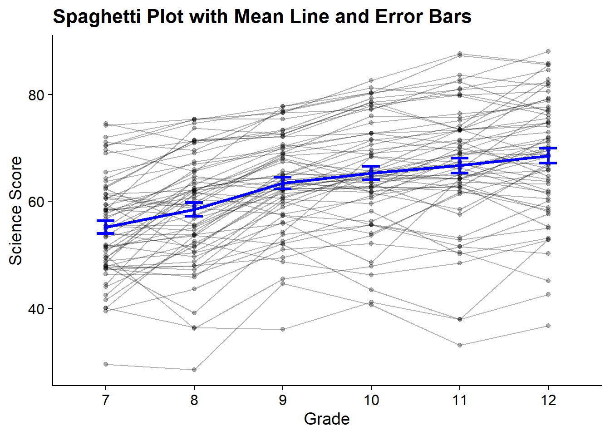
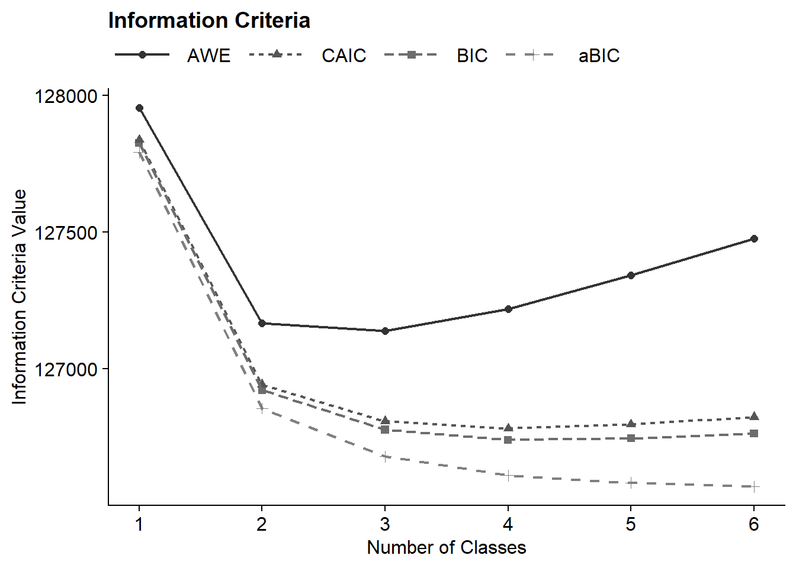
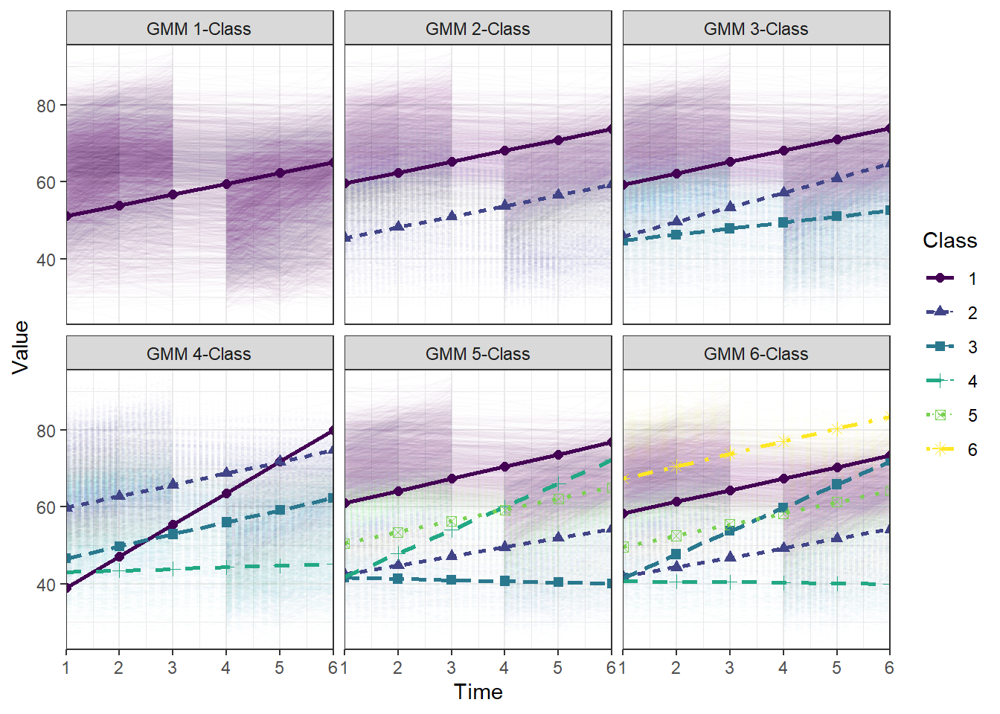
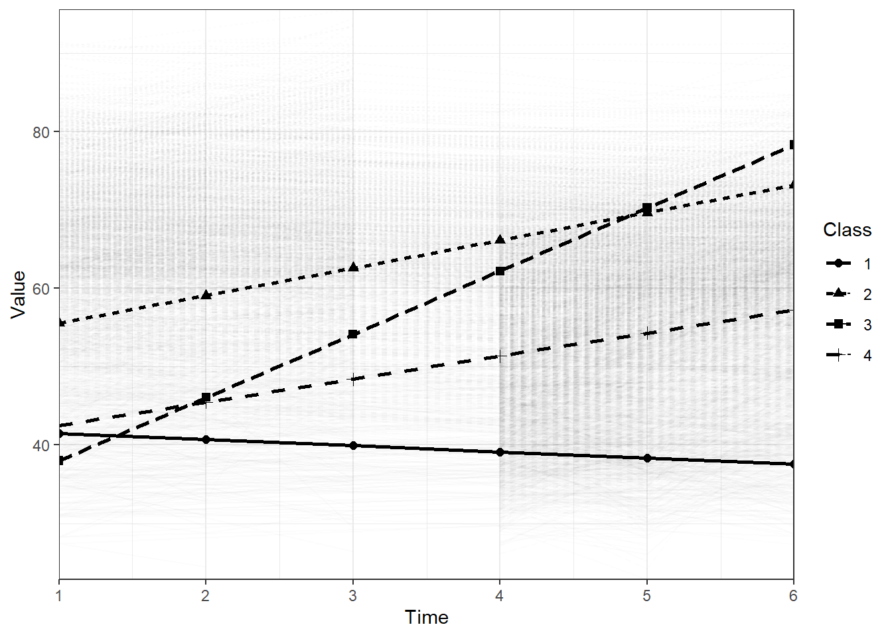

10 Growth Mixture Models
Example: Longitudinal Study of American Youth
Data source: : This example looks at science IRT scores over time (Grades 7-12). See documentation here. Covariates include gender and interest in science issues in 7th grade.
10.1 Load Packages
library(tidyverse)
library(MplusAutomation)
library(here)
library(DiagrammeR)
library(glue)
library(cowplot)
library(gt)
library(Hmisc)10.2 Path Diagram
Read in LSAY dataset
lsay_sci <- read_csv(here("data","lsay_sci_gmm.csv")) %>%
rename(
id = CASENUM,
female = GENDER,
interest7 = AB34D,
sci7 = ASCIIRT,
sci8 = CSCIIRT,
sci9 = ESCIIRT,
sci10 = GSCIIRT,
sci11 = ISCIIRT,
sci12 = KSCIIRT
) %>%
mutate(female = ifelse(female == 1, 1, 0))10.2.1 Descriptive Statistics
lsay_sci %>%
select(-id) %>%
psych::describe()
#> vars n mean sd median trimmed mad min
#> female 1 5945 0.49 0.50 0.00 0.49 0.00 0.00
#> interest7 2 2992 1.80 0.76 2.00 1.76 1.48 1.00
#> sci7 3 3071 50.41 10.20 50.04 50.18 11.33 26.14
#> sci8 4 2527 54.05 11.16 54.64 54.25 12.11 22.82
#> sci9 5 2326 58.69 11.24 60.40 59.15 11.05 27.36
#> sci10 6 4690 60.32 11.02 60.84 60.50 11.72 26.97
#> sci11 7 3592 64.10 11.21 64.75 64.51 11.10 24.44
#> sci12 8 2826 65.85 11.65 66.25 66.28 11.14 26.38
#> max range skew kurtosis se
#> female 1.00 1.00 0.04 -2.00 0.01
#> interest7 3.00 2.00 0.34 -1.20 0.01
#> sci7 88.03 61.89 0.20 -0.46 0.18
#> sci8 83.94 61.12 -0.17 -0.65 0.22
#> sci9 91.21 63.85 -0.35 -0.40 0.23
#> sci10 91.33 64.36 -0.14 -0.43 0.16
#> sci11 93.13 68.69 -0.34 -0.17 0.19
#> sci12 95.56 69.18 -0.35 0.02 0.2210.2.1.1 Correlation Table
cor_data <- lsay_sci %>%
select(-id)
rcorr(as.matrix(cor_data))
#> female interest7 sci7 sci8 sci9 sci10 sci11
#> female 1.00 -0.15 -0.07 -0.01 -0.05 -0.09 -0.11
#> interest7 -0.15 1.00 0.24 0.24 0.25 0.26 0.22
#> sci7 -0.07 0.24 1.00 0.81 0.76 0.75 0.74
#> sci8 -0.01 0.24 0.81 1.00 0.85 0.81 0.81
#> sci9 -0.05 0.25 0.76 0.85 1.00 0.88 0.86
#> sci10 -0.09 0.26 0.75 0.81 0.88 1.00 0.88
#> sci11 -0.11 0.22 0.74 0.81 0.86 0.88 1.00
#> sci12 -0.14 0.26 0.74 0.76 0.82 0.83 0.90
#> sci12
#> female -0.14
#> interest7 0.26
#> sci7 0.74
#> sci8 0.76
#> sci9 0.82
#> sci10 0.83
#> sci11 0.90
#> sci12 1.00
#>
#> n
#> female interest7 sci7 sci8 sci9 sci10 sci11 sci12
#> female 5945 2992 3071 2527 2326 4690 3592 2826
#> interest7 2992 2992 2951 2431 2236 1907 1531 1103
#> sci7 3071 2951 3071 2494 2297 1958 1573 1134
#> sci8 2527 2431 2494 2527 2067 1745 1436 1051
#> sci9 2326 2236 2297 2067 2326 1792 1432 1043
#> sci10 4690 1907 1958 1745 1792 4690 3323 2621
#> sci11 3592 1531 1573 1436 1432 3323 3592 2433
#> sci12 2826 1103 1134 1051 1043 2621 2433 2826
#>
#> P
#> female interest7 sci7 sci8 sci9 sci10
#> female 0.0000 0.0003 0.6275 0.0264 0.0000
#> interest7 0.0000 0.0000 0.0000 0.0000 0.0000
#> sci7 0.0003 0.0000 0.0000 0.0000 0.0000
#> sci8 0.6275 0.0000 0.0000 0.0000 0.0000
#> sci9 0.0264 0.0000 0.0000 0.0000 0.0000
#> sci10 0.0000 0.0000 0.0000 0.0000 0.0000
#> sci11 0.0000 0.0000 0.0000 0.0000 0.0000 0.0000
#> sci12 0.0000 0.0000 0.0000 0.0000 0.0000 0.0000
#> sci11 sci12
#> female 0.0000 0.0000
#> interest7 0.0000 0.0000
#> sci7 0.0000 0.0000
#> sci8 0.0000 0.0000
#> sci9 0.0000 0.0000
#> sci10 0.0000 0.0000
#> sci11 0.0000
#> sci12 0.000010.2.1.2 Spaghetti Plot
plot_data <- lsay_sci[1:500,] %>%
drop_na() %>%
pivot_longer(cols = starts_with("sci"),
names_to = "grade",
values_to = "value") %>%
mutate(grade = factor(grade,
levels = c("sci7", "sci8", "sci9", "sci10", "sci11", "sci12"),
labels = c(7,8,9,10,11,12)))
mean_sci <- plot_data %>%
drop_na() %>%
group_by(grade) %>%
summarise(mean_response = mean(value),
se_response = sd(value) / sqrt(n()))
ggplot() +
geom_point(data = plot_data, aes(x = grade, y = value, group = id), alpha = .3) +
geom_line(data = plot_data, aes(x = grade, y = value, group = id), alpha = .3) +
geom_point(data=mean_sci, aes(x=grade, y = mean_response), color = "Blue", size = 1.2) +
geom_line(data=mean_sci, aes(x=grade, y = mean_response, group = 1), color = "blue", size = 1.2) +
geom_errorbar(data = mean_sci, aes(x = grade, ymin = mean_response - se_response,
ymax = mean_response + se_response),
width = 0.2, size = 1.2, color = "blue") +
labs(title = "Spaghetti Plot with Mean Line and Error Bars",
x="Grade",
y="Science Score") +
theme_cowplot() 
10.2.2 Unconditional Growth Mixture Model
This MplusAutomation code loops through the class-specific statements to include freeing variances and covariances.
gmm_6 <- lapply(1:6, function(k){
# This MODEL section changes the model specification
MODEL <- paste(sapply(1:k, function(i) {
glue("
%c#{i}%
s WITH I; ! covariances are freely estimated
sci7-sci12; ! variances are freely estimated
")
}), collapse = "\n")
gmm_enum <- mplusObject(
TITLE = glue("GMM {k}-Class"),
VARIABLE = glue(
"usevar = sci7-sci12;
classes = c({k}); "),
ANALYSIS =
"estimator = mlr;
type = mixture;
starts = 200 100;
processors = 12;",
MODEL = glue("%OVERALL%
i s | sci7@0 sci8@1 sci9@2 sci10@3 sci11@4 sci12@5;
{MODEL}"), # The `MODEL` object is placed here.
OUTPUT = "tech1 tech11 tech14 sampstat standardized svalues;",
SAVEDATA =
glue("FILE IS savedata_c{k}.dat;
SAVE = cprobabilities;"),
PLOT = "type=plot3;
series = sci7-sci12(*)",
usevariables = colnames(lsay_sci),
rdata = lsay_sci)
gmm_enum_fit <- mplusModeler(gmm_enum,
dataout=glue(here("gmm", "gmm_enum", "gmm_lsay.dat")),
modelout=glue(here("gmm", "gmm_enum", "c{k}_gmm_lsay.inp")) ,
check=TRUE, run = TRUE, hashfilename = FALSE)
})10.2.2.1 Table of Fit
First, extract data:
output_gmm <- readModels(here("gmm","gmm_enum"), filefilter = "gmm", quiet = TRUE)
# Extract fit indices
enum_extract <- LatexSummaryTable(
output_gmm,
keepCols = c(
"Title",
"Parameters",
"LL",
"BIC",
"aBIC",
"BLRT_PValue",
"T11_VLMR_PValue",
"Observations"
),
sortBy = "Title"
)
# Extract lowest class size
min_sizes <- map_df(names(output_gmm), ~ {
model <- output_gmm[[.x]]
min_size <- min(model$class_counts$modelEstimated$proportion) * 100
tibble(Model = .x, min_cs = round(min_size, 2))
})
# Combine dataframe
combined <- cbind(enum_extract, min_sizes)
# Calculate additional fit indices
allFit <- combined %>%
mutate(CAIC = -2 * LL + Parameters * (log(Observations) + 1)) %>%
mutate(AWE = -2 * LL + 2 * Parameters * (log(Observations) + 1.5)) %>%
mutate(SIC = -.5 * BIC) %>%
mutate(expSIC = exp(SIC - max(SIC))) %>%
mutate(BF = exp(SIC - lead(SIC))) %>%
mutate(cmPk = expSIC / sum(expSIC)) %>%
dplyr::select(Title, Parameters, min_cs, LL, BIC, aBIC, CAIC, AWE, BLRT_PValue, T11_VLMR_PValue, BF, cmPk) %>%
arrange(Parameters)Then, create table:
fit_table1 <- allFit %>%
gt() %>%
tab_header(title = md("**Model Fit Summary Table**")) %>%
cols_label(
Title = "Classes",
Parameters = md("Par"),
min_cs = md("Min. Class Size"),
LL = md("*LL*"),
T11_VLMR_PValue = "VLMR",
BLRT_PValue = "BLRT",
BF = md("BF"),
cmPk = md("*cmPk*")
) %>%
tab_footnote(
footnote = md(
"*Note.* Par = Parameters; *LL* = model log likelihood;
BIC = Bayesian information criterion;
aBIC = sample size adjusted BIC; CAIC = consistent Akaike information criterion;
AWE = approximate weight of evidence criterion;
BLRT = bootstrapped likelihood ratio test p-value;
VLMR = Vuong-Lo-Mendell-Rubin adjusted likelihood ratio test p-value;
*cmPk* = approximate correct model probability."
),
locations = cells_title()
) %>%
tab_options(column_labels.font.weight = "bold") %>%
fmt_number(c(3:8),
decimals = 2) %>%
fmt_missing(1:12,
missing_text = "--") %>%
fmt(
c(9:10, 12),
fns = function(x)
ifelse(x < 0.001, "<.001",
scales::number(x, accuracy = .01))
) %>%
fmt(
11,
fns = function (x)
ifelse(x > 100, ">100",
scales::number(x, accuracy = .01))
) %>%
tab_style(
style = list(
cell_text(weight = "bold")
),
locations = list(cells_body(
columns = BIC,
row = BIC == min(BIC[c(1:6)]) # Change this to the number of classes you estimated
),
cells_body(
columns = aBIC,
row = aBIC == min(aBIC[1:6])
),
cells_body(
columns = CAIC,
row = CAIC == min(CAIC[1:6])
),
cells_body(
columns = AWE,
row = AWE == min(AWE[1:6])
),
cells_body(
columns = cmPk,
row = cmPk == max(cmPk[1:6])
),
cells_body(
columns = BF,
row = BF > 10),
cells_body(
columns = T11_VLMR_PValue,
row = ifelse(T11_VLMR_PValue < .001 & lead(T11_VLMR_PValue) > .05, T11_VLMR_PValue < .001, NA)),
cells_body(
columns = BLRT_PValue,
row = ifelse(BLRT_PValue < .001 & lead(BLRT_PValue) > .05, BLRT_PValue < .001, NA))
)
)
fit_table1| Model Fit Summary Table1 | |||||||||||
| Classes | Par | Min. Class Size | LL | BIC | aBIC | CAIC | AWE | BLRT | VLMR | BF | cmPk |
|---|---|---|---|---|---|---|---|---|---|---|---|
| GMM 1-Class | 11 | 100.00 | −63,865.66 | 127,826.77 | 127,791.82 | 127,837.77 | 127,955.22 | – | – | 0.00 | <.001 |
| GMM 2-Class | 21 | 40.34 | −63,370.06 | 126,922.33 | 126,855.60 | 126,943.33 | 127,167.54 | <.001 | <.001 | 0.00 | <.001 |
| GMM 3-Class | 31 | 28.75 | −63,254.48 | 126,777.95 | 126,679.44 | 126,808.95 | 127,139.93 | <.001 | 0.01 | 0.00 | <.001 |
| GMM 4-Class | 41 | 1.93 | −63,192.38 | 126,740.50 | 126,610.22 | 126,781.50 | 127,219.26 | <.001 | 0.01 | 17.80 | 0.95 |
| GMM 5-Class | 51 | 4.30 | −63,151.87 | 126,746.26 | 126,584.20 | 126,797.26 | 127,341.78 | <.001 | 0.00 | >100 | 0.05 |
| GMM 6-Class | 61 | 3.89 | −63,117.02 | 126,763.32 | 126,569.49 | 126,824.32 | 127,475.62 | <.001 | 0.04 | – | <.001 |
| 1 Note. Par = Parameters; LL = model log likelihood; BIC = Bayesian information criterion; aBIC = sample size adjusted BIC; CAIC = consistent Akaike information criterion; AWE = approximate weight of evidence criterion; BLRT = bootstrapped likelihood ratio test p-value; VLMR = Vuong-Lo-Mendell-Rubin adjusted likelihood ratio test p-value; cmPk = approximate correct model probability. | |||||||||||
10.2.2.2 Information Criteria Plot
allFit %>%
dplyr::select(LL:AWE) %>%
rowid_to_column() %>%
pivot_longer(`BIC`:`AWE`,
names_to = "Index",
values_to = "ic_value") %>%
mutate(Index = factor(Index,
levels = c ("AWE", "CAIC", "BIC", "aBIC"))) %>%
ggplot(aes(
x = rowid,
y = ic_value,
color = Index,
shape = Index,
group = Index,
lty = Index
)) +
geom_point(size = 2.0) + geom_line(size = .8) +
scale_x_continuous(breaks = 1:nrow(allFit)) +
scale_colour_grey(end = .5) +
theme_cowplot() +
labs(x = "Number of Classes", y = "Information Criteria Value", title = "Information Criteria") +
theme(
text = element_text(family = "Times", size = 12),
legend.text = element_text(family="Times", size=12),
legend.key.width = unit(3, "line"),
legend.title = element_blank(),
legend.position = "top"
)
10.2.2.3 Plot GMM
plotGrowthMixtures(output_gmm, estimated = TRUE, rawdata = TRUE,
time_scale = c(1, 2, 3, 4, 5, 6), alpha_range = c(0, 0.01))
10.2.3 Covariates Growth Mixture Model
Two covariates were used in the GMM analysis and were related to the latent class variable: gender and interest in science issues in 7th grade.
step1 <- mplusObject(
TITLE = "GMM with Covariates",
VARIABLE =
"usevar = sci7-sci12
female interest7;
classes = c(4);",
ANALYSIS =
"estimator = mlr;
type = mixture;
starts = 200 100;
processors = 12;",
MODEL =
"%OVERALL%
i s on female interest7;
i s | sci7@0 sci8@1 sci9@2 sci10@3 sci11@4 sci12@5;
%c#1%
s WITH I; ! covariances are freely estimated
sci7-sci12; ! variances are freely estimated
i s on female interest7;
%c#2%
s WITH I;
sci7-sci12;
i s on female interest7;
%c#3%
s WITH I;
sci7-sci12;
i s on female interest7;
%c#4%
s WITH I;
sci7-sci12;
i s on female interest7;",
OUTPUT = "tech1 tech11 tech14 sampstat standardized svalues;",
SAVEDATA =
glue("FILE IS savedata_c4.dat;
SAVE = cprobabilities;"),
PLOT = "type=plot3;
series = sci7-sci12(*)",
usevariables = colnames(lsay_sci),
rdata = lsay_sci)
step1_fit <- mplusModeler(step1,
dataout=here("gmm", "gmm_cov", "gmm_cov.dat"),
modelout=here("gmm", "gmm_cov", "gmm_cov.inp") ,
check=TRUE, run = TRUE, hashfilename = FALSE)10.2.3.1 Plot GMM
gmm_cov <- readModels(here("gmm", "gmm_cov", "gmm_cov.out"))
plotGrowthMixtures(gmm_cov, estimated = TRUE, rawdata = TRUE,
time_scale = c(1, 2, 3, 4, 5, 6), alpha_range = c(0, 0.01), bw = TRUE)